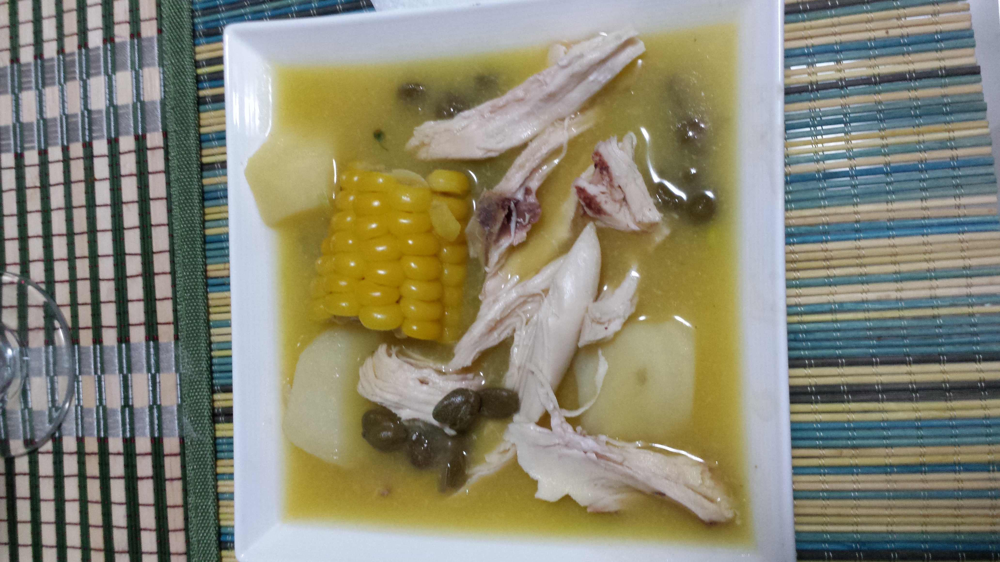

Ajiaco

By Xemenendura - Own work, CC BY-SA 3.0, Wikipedia.com
El ajiaco es un plato característico de Colombia y de alguna regiones de sur américa, consiste en una sopa que contiene, por lo menos en el ajiaco colombiano, pollo, maiz dulce, diferentes tipos de papa, y una hierva llamada guasca, la cual atribuye a este plato su sabor particular.
Ingredientes
- 8 tazas de agua
- 1 pechuga grande, deshuesada y sin piel
- 1 taza de guascas
- 2libras de papas rojas, peladasy cortadas en trozos grandes
- 1 cebolla mediana, picada
- 2 dientes de ajo
- 1 libra de papas Yukon, cortadasen trozos de 2 pulgadas
- 3 mazorcas grandes de maiz dulce, limpias y cortadas a la mitad
- 1/2 taza de chicharrón de puerco
- 1 cubito de cado de pollo
- 11/2 cucharadas de sal
Preparación
- En una olla grande, agrega el agua, el pollo y 1/2 taza de guascas. Deja hervir a fuego lento durante aproximadamente 40 minutos. Una vez que el pollo esté cocido, retírela del agua y colóquela en una tabla de cortar. Reserva el líquido de cocción. Use dos tenedores para separar el pollo en trozos grandes del tamaño de un bocado. Cubre con papel de aluminio para mantener el calor.
- En la misma agua que cocinaste el pollo, agrega las papas rojas, la cebolla, el ajo y la sal. Cocina por aproximadamente 2 horas o hasta que las papas esten suaves. Agrega agua adicional según sea necesario para cocinar las papas por completo y aún así mantener jugosa la base del guiso.
- Agrega el pollo, las papas Yukon y el caldo de pollo a la mezcla de papas. Revuelve con cuidado y deja hervir a fuego lento durante 50 minutos o hasta que las papas Yukon estén tiernas. Agrega el maíz y cocina por 10 minutos más.
- Agrega la 1/2 taza restante de las guascas y los chicharos. Cocina por 5 minutos más o hasta que esté completamente caliente.
- Divide el guiso de manera uniforme entre 6 tazones, asegurándote que cada tazón tenga un trozo de maíz. Adorne al gusto con perejil, crema agria y alcaparras.
Receta tomada de quericavida.com
Más Recetas
Ir al inicio